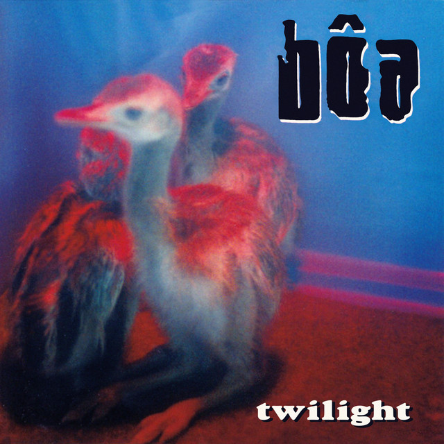
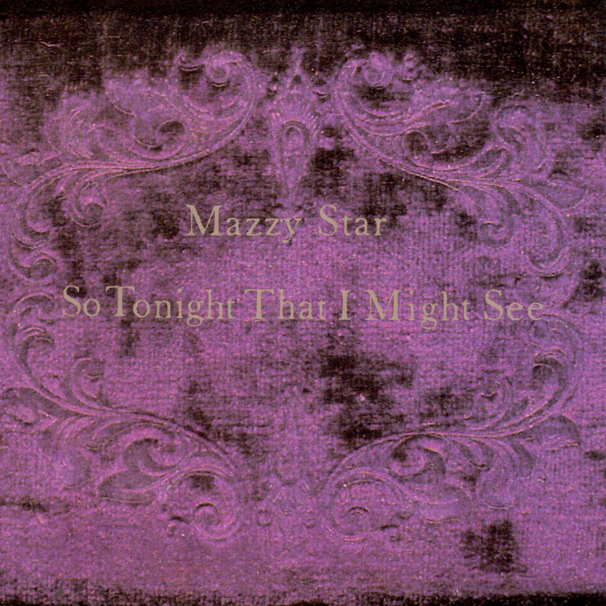
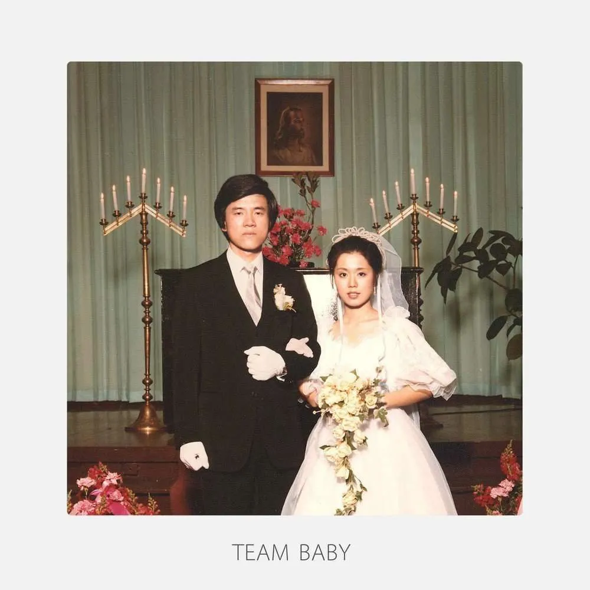
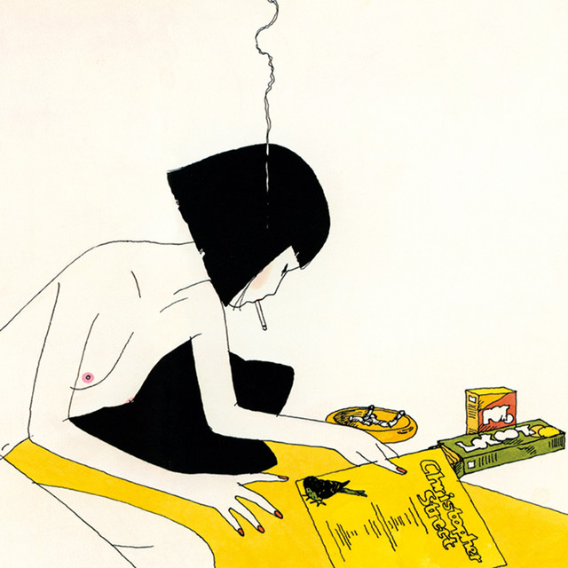

Somewhere
The Neverminds
Express themes of anticipation, uncertainty, nostalgia, and enduring love in a relationship. They touch upon waiting for the future, reminiscing about shared memories, accepting potential separations, and reaffirming love despite the passage of time.
Duvet
Bôa
It's nostalgic and tender, painting a colorful picture of intermingling instruments that come together to build a chirpy, guitar-pop sound. It's the kind of song that would play in a romantic scene of a '90s rom-com taking place during a pivotal summer in the main character's life.
Sunsetz
Cigarettes After Sex

Portrays a longing for intimacy and connection with someone who shares exclusive moments of laughter and comfort with the speaker. The song's lyrics evoke a sense of intimacy in relationships, emphasizing the importance of and mutual understanding.
Fade Into You
Mazzy Star
A song about longing for emotional connection and intimacy. The lyrics express a desire to hold onto authenticity and truth within a relationship, despite feeling a sense of emptiness and uncertainty.
EVERYTHING
The Black Skirts 2
The song explores the idea that everything in life is temporary and constantly changing. It touches upon themes of nostalgia, regret, and the passage of time. The lyrics express a longing to hold onto moments and memories, even as they slip away.
A Toshi no Aki
Lamp
This song likely conveys a sense of nostalgia for the past and contemplation of the present, set against the backdrop of autumn in the city. It's a song that invites listeners to reflect on their own lives and experiences.
Virgin Suicide
宇宙ネコ子

The song expresses a nostalgic longing for a time when the singer and their significant other were childlike in their pursuit of love.
when you sleep
my bloody valentine
A dreamy, shoegaze track that explores themes of love, desire, and longing. The song conveys the intoxicating mixture of emotions that come with being in love, from euphoria to vulnerability.
Your face
Wisp
The song is a reflection on the unrequited love or one-sided attraction, capturing the complexity of emotions and the struggles of desiring someone who may not feel the same way.
My Jinji
Description of Song 2
A dreamy, synth-heavy track that explores themes of love, longing, and nostalgia. It's a song that resonates with the universal experience of yearning for intimacy and closeness with a loved one.